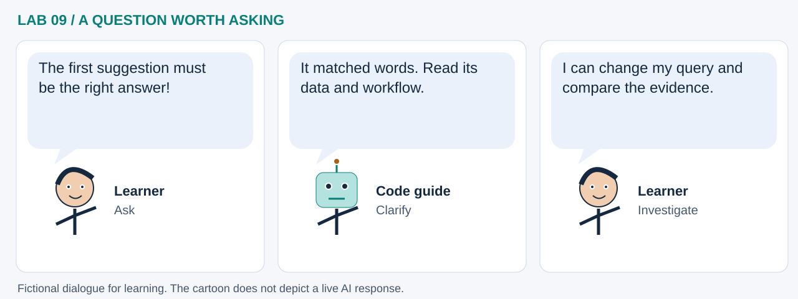

LAB 09 · 32-SECOND VISUAL WALKTHROUGH
A transparent discovery assistant
Which existing map demos resemble the workflow I want to try?
Silent, captioned storyboard. Use the player to pause, seek or change playback speed. On a small screen, use fullscreen or read the transcript below. The diagrams explain the method; they are not recordings of a live model run.
Download MP4 · Captions · Open infographic at full size

What runs here?
The bundled eighteen-description manifest is processed in Pyodide. Opening recommended live projects needs network access.
Browser text learning: TF–IDF features, K-Means themes, SVD visualization and cosine retrieval.
Transcript and code landmarks
- 00–08s · Describe
Combine each demo's title, tags and description into one document.
corpus = ... - 08–16s · Encode
Turn distinctive words and pairs into numeric features.
vectorizer.fit_transform(corpus) - 16–24s · Compare
Compare a question with every description using the same vocabulary.
cosine_similarity(query_vector, X) - 24–32s · Inspect
Read the suggested projects; a similarity score is not a correctness probability.
nlargest(5, 'similarity')
The common misconception

Read the cartoon dialogue
- The first suggestion must be the right answer!
- It matched words. Read its data and workflow.
- I can change my query and compare the evidence.
Try explaining it
What happens if none of your query words is in the learned vocabulary?
Check your reasoning
The query vector can be all zero, producing tied zero scores rather than meaningful recommendations.
Original educational illustrations and captions authored for this repository. See the notebook for data and software citations.